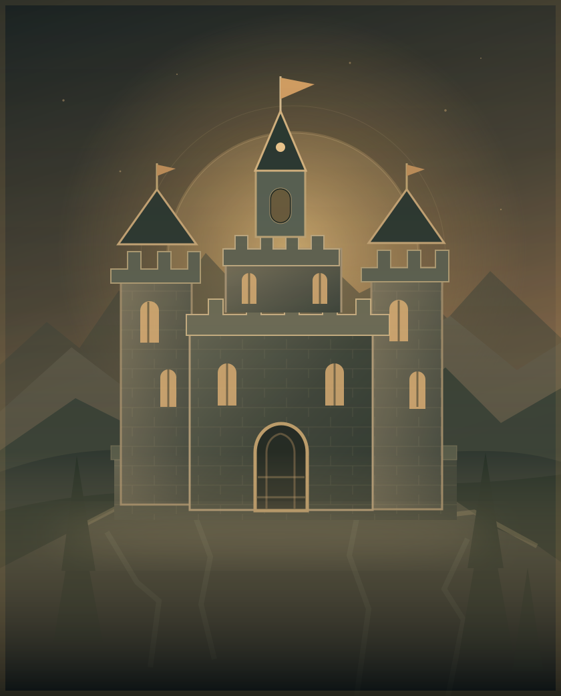

Спадщина
Ми поважаємо минуле, зберігаємо здобутки та створюємо історії, які залишаться після нас.
StoneLand II — простір, де спільнота творить власну історію. Традиції, ідеї та люди, які разом будують майбутнє Імперії.

Імперія починається не з кордонів, а з людей, які поділяють цінності та готові разом створювати щось значуще.
Ми поважаємо минуле, зберігаємо здобутки та створюємо історії, які залишаться після нас.
Кожен учасник спільноти має значення. Спільні цілі роблять наші ідеї сильнішими.
Будівництво, культура, дипломатія та відкриття. Тут є місце для різних талантів.
Не успадкувати велич. Створити її разом.
Імперський устрій — символ відповідальності, організації та спільної роботи. Кожна роль важлива для цілого.
Символ державної єдності та стратегічного бачення.
Планування розвитку, ухвалення рішень та координація.
Об'єднання за інтересами, проєктами та напрямами.
Головна сила спільноти — її люди та їхні ідеї.
* Представлена модель устрою — концепція порталу; назви та повноваження можна змінити відповідно до правил вашої спільноти.
Кожна велика історія має першу сторінку. Для StoneLand II це — прагнення об'єднати однодумців навколо власного світу та спільного задуму.
ПЕРША СТОРІНКА ЛІТОПИСУ ✧Ідеї стають проєктами, знайомства — союзами, а кожен новий день додає до хроніки Імперії власні події та досягнення.
МИ ТВОРИМО ЦЕ РАЗОМ ✧Розвиток спільноти, нові ініціативи, архітектурні проєкти та події. Якою буде наступна епоха, залежить від тих, хто приєднається.
МАЙБУТНЄ ЩЕ НЕ НАПИСАНЕ ✧Чотири принципи, які формують характер спільноти. Це ціннісні орієнтири, а не опубліковані правила сервера.
Взаємна повага — основа спілкування й співпраці.
Довіра народжується там, де обіцянки мають значення.
Спільні правила мають працювати однаково для всіх.
Підтримуй ідеї, допомагай розвивати спільні проєкти.
Маєш ідеї, хочеш будувати, досліджувати чи розвивати спільноту? Підготуй коротку заявку на вступ до Імперії.